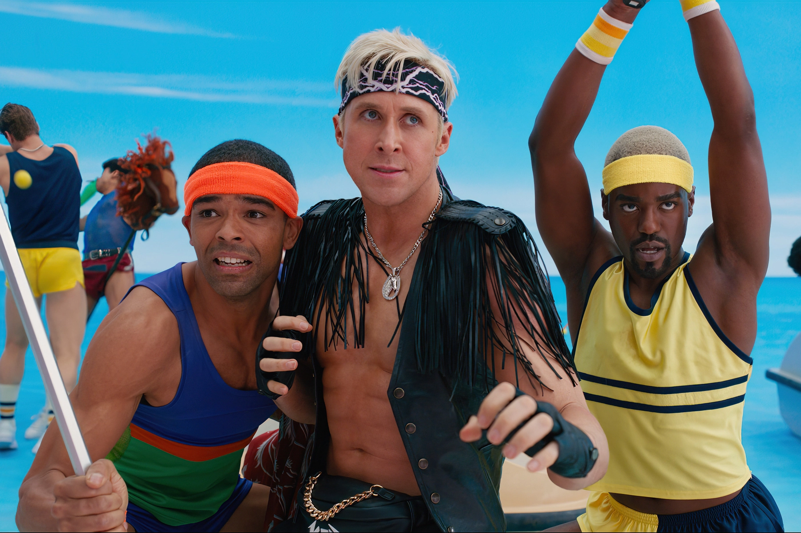

Ken, leading all Kens to go Kenning at the Ken, Ken...
ALL OF KEN'S CAREERS
- Astronaut (clothing pack 1965[16])
- Banker (playset 1995[17])
- Barista (2019[18])
- Baseball player (clothing pack 1991[19])
- Basketball player (clothing pack 2021[20])
- Beach (2023[21])
- Boxer (clothing pack 1963[16])
- Businessman (clothing pack 1992[22])
- Cameraman (playset 1987[23])
- Coach (clothing pack 1992[24])
- Country Western singer (1999[25])
- Cowboy (Venezuela-exclusive Llanero 1989[26])
- Dancer (2011[27])
- Dentist (2020[28])
- Doctor (1963-1965 fashion pack,1987,[29] 1988,[30] clothing pack 1992,[31] 1998,[32] 2010,[33] 2012[34])
- Dog trainer (2020[35])
- Drum major (clothing pack 1964[16])
- Farmer (2019[36])
- Fashion model (2003[37])
- Film art director (2003[38])
- Firefighter (2010,[39] 2019[18])
- Football player (clothing pack 1992[40])
- Golfer (clothing pack 2019[41])
- Hamburger chef (clothing pack 2020[42])
- Movie star (1977,[43] 1988[44])
- Ice skater (1990[45])
- Lifeguard (1995,[46] 2019[18])
- Nurse (clothing pack 2021[47])
- Olympic athlete (Venezuela-exclusive 1988[48])
- Olympic figure skater (1997[49])
- Olympic hockey player (clothing pack 1975[50])
- Olympic skier (1975[51])
- Olympic swimmer (1975[52])
- Photographer (2000[53])
- Pilot (clothing pack 1964,[16] clothing pack 1973,[54] 1990,[55] 2014[56])
- Pizza chef (clothing pack 2019[57])
- Rapper (1992[58])
- Referee (clothing pack 2019[59])
- Reporter (clothing pack 1965,[16] 2015[60])
- Rock star (1987,[61] 1989,[62] clothing pack 1991[63])
- Sailor (clothing pack 1963[16])
- Saxophonist (clothing pack 2020[64])
- Science teacher (clothing pack 2020[65])
- Skier (clothing pack 1963[66])
- Snowboarder (2012[67])
- Soccer player (2019[18])
- Soda fountain worker (clothing pack 1964,[16] 2000[68])
- Spy (2015[69])
- Starfleet command officer (1996[70])
- Tennis player (1979[71])
- United States Air Force pilot (clothing pack 1963,[16] 1993[72])
- United States Air Force Thunderbirds pilot (1994[73])
- United States Army officer (clothing pack 1963,[16] 1992[74])
- United States Marine Corps sergeant (1992[75])
- Wildlife veterinarian (2020[76])